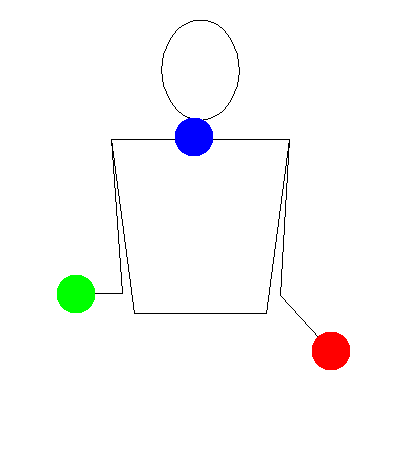

Reverse Cascade

Description
Prerequisites
Tutorial
Tips
- This should look like 2 rainbows.
- This is generally the first asymmetrical trick people learn. That means that it can be done two ways although it takes practice. This will be odd for muscle memory because it feels unbalanced.